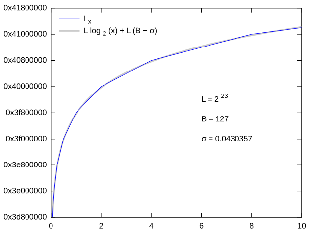

Calculating an inverse square root directly — by first calculating a square root and then dividing $1$ by it — is extremely slow because both of these operations are slow even though they are implemented in hardware.
But there is a surprisingly good approximation algorithm that takes advantage of the way floating-point numbers are stored in memory. In fact, it is so good that it has been implemented in hardware, so the algorithm is no longer relevant by itself for software engineers, but we are nonetheless going to walk through it for its intrinsic beauty and great educational value.
Apart from the method itself, quite interesting is the history of its creation. It is attributed to a game studio id Software that used it in their iconic 1999 game Quake III Arena, although apparently, it got there by a chain of “I learned it from a guy who learned it from a guy” that seems to end on William Kahan (the same one that is responsible for IEEE 754 and Kahan summation algorithm).
It became popular in game developing community around 2005 when they released the source code of the game. Here is the relevant excerpt from it, including the comments:
float Q_rsqrt(float number) {
long i;
float x2, y;
const float threehalfs = 1.5F;
x2 = number * 0.5F;
y = number;
i = * ( long * ) &y; // evil floating point bit level hacking
i = 0x5f3759df - ( i >> 1 ); // what the fuck?
y = * ( float * ) &i;
y = y * ( threehalfs - ( x2 * y * y ) ); // 1st iteration
// y = y * ( threehalfs - ( x2 * y * y ) ); // 2nd iteration, this can be removed
return y;
}
We will go through what it does step by step, but first, we need to take a small detour.
#Approximate Logarithm
Before computers (or at least affordable calculators) became an everyday thing, people computed multiplication and related operations using logarithm tables — by looking up the logarithms of $a$ and $b$, adding them, and then finding the inverse logarithm of the result.
$$ a \times b = 10^{\log a + \log b} = \log^{-1}(\log a + \log b) $$ You can do the same trick when computing $\frac{1}{\sqrt x}$ using the identity: $$ \log \frac{1}{\sqrt x} = - \frac{1}{2} \log x $$The fast inverse square root is based on this identity, and so it needs to calculate the logarithm of $x$ very quickly. Turns out, it can be approximated by just reinterpreting a 32-bit float as an integer.
Recall that floating-point numbers sequentially store the sign bit (equal to zero for positive values, which is our case), exponent $e_x$ and mantissa $m_x$, which corresponds to
$$ x = 2^{e_x} \cdot (1 + m_x) $$ Its logarithm is therefore $$ \log_2 x = e_x + \log_2 (1 + m_x) $$ Since $m_x \in [0, 1)$, the logarithm on the right-hand side can be approximated by $$ \log_2 (1 + m_x) \approx m_x $$ The approximation is exact at both ends of the intervals, but to account for the average case we need to shift it by a small constant $\sigma$, therefore $$ \log_2 x = e_x + \log_2 (1 + m_x) \approx e_x + m_x + \sigma $$ Now, having this approximation in mind and defining $L=2^{23}$ (the number of mantissa bits in afloat) and $B=127$ (the exponent bias), when we reinterpret the bit-pattern of $x$ as an integer $I_x$, we essentially get
$$
\begin{aligned}
I_x &= L \cdot (e_x + B + m_x)
\\ &= L \cdot (e_x + m_x + \sigma +B-\sigma )
\\ &\approx L \cdot \log_2 (x) + L \cdot (B-\sigma )
\end{aligned}
$$
(Multiplying an integer by $L=2^{23}$ is equivalent to left-shifting it by 23.)
When you tune $\sigma$ to minimize the mean square error, this results in a surprisingly accurate approximation.

Now, expressing the logarithm from the approximation, we get
$$ \log_2 x \approx \frac{I_x}{L} - (B - \sigma) $$Cool. Now, where were we? Oh, yes, we wanted to calculate the inverse square root.
#Approximating the Result
To calculate $y = \frac{1}{\sqrt x}$ using the identity $\log_2 y = - \frac{1}{2} \log_2 x$, we can plug it into our approximation formula and get
$$ \frac{I_y}{L} - (B - \sigma) \approx - \frac{1}{2} ( \frac{I_x}{L} - (B - \sigma) ) $$ Solving for $I_y$: $$ I_y \approx \frac{3}{2} L (B - \sigma) - \frac{1}{2} I_x $$It turns out, we don’t even need to calculate the logarithm in the first place: the formula above is just a constant minus half the integer reinterpretation of $x$. It is written in the code as:
i = * ( long * ) &y;
i = 0x5f3759df - ( i >> 1 );
We reinterpret y as an integer in the first line, and then it plug into the formula on the second, the first term of which is the magic number $\frac{3}{2} L (B - \sigma) = \mathtt{0x5F3759DF}$, while the second is calculated with a binary shift instead of division.
#Iterating with Newton’s Method
What we have next is a couple hand-coded iterations of Newton’s method with $f(y) = \frac{1}{y^2} - x$ and a very good initial value. Its update rule is
$$ f'(y) = - \frac{2}{y^3} \implies y_{i+1} = y_{i} (\frac{3}{2} - \frac{x}{2} y_i^2) = \frac{y_i (3 - x y_i^2)}{2} $$which is written in the code as
x2 = number * 0.5F;
y = y * ( threehalfs - ( x2 * y * y ) );
The initial approximation is so good that just one iteration was enough for game development purposes. It falls within 99.8% of the correct answer after just the first iteration and can be reiterated further to improve accuracy — which is what is done in the hardware: the x86 instruction does a few of them and guarantees a relative error of no more than $1.5 \times 2^{-12}$.